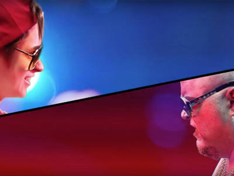

Full Tilt


Motion Graphics, Compositing, Art direction and Minature construction
A short film project made possible by the generosity of friends, Full Tilt gave me the opportunity to try my hand at a pile of zany visuals, as well as the chance to spend a weekend building styrofoam mountains and rendering cheesy effects work.
Directed by Magill Foote
Director of Photography Grant Jeffery
Written by Magill Foote and Grant Jeffery
Edited by Magill Foote
Visual Effects by Grant Jeffery
Produced by Magill Foote and Grant Jeffery
Shot on location at The House of Targ
Music by Vince Nitro
Thanks for watching!